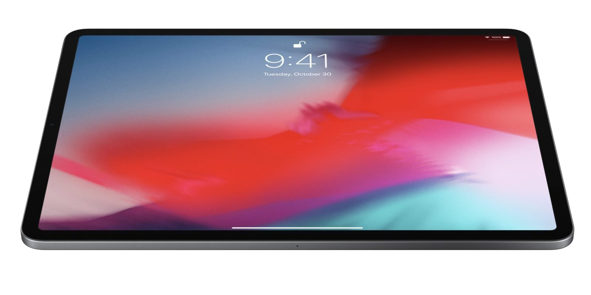

Featured Products
iPhone 13 and 13 Pro

The iPhone is a line of smartphones designed and marketed by Apple Inc. these devices use Apple's iOS mobile operating system. The first-generation iPhone was announced by then-Apple CEO Steve Jobs on January 9, 2007. Since then, Apple has annually released new iPhone models and iOS updates. As of November 1, 2018, more than 2.2 billion iPhones had been sold. The lineup consists of 8 devices including the iPhone 11, 12, 12 mini, SE, 13 mini, 13, 13 Pro and lastly the 13 Pro Max, Apple sold 40 billion USD worth of iPhones in Q1 of 2022.
As usually, to no ones surprise, the iPhone leads the Apple pack as always with the highest reveue and profit, the iPhone business single handedly beats out full companies like Snapchat, Netflix, etc.
and more.
Read more »
Apple Airpods

AirPods are wireless Bluetooth earbuds designed by Apple Inc. They were first announced on September 7, 2016 alongside the iPhone 7. Within two years, they became Apple's most popular accessory. They are Apple's entry-level wireless headphones, sold alongside the AirPods Pro and AirPods Max.
In addition to playing audio, the AirPods contain a microphone that filters out background noise as well as built-in accelerometers and optical sensors capable of detecting taps and pinches (e.g. double-tap or pinch to pause audio) and placement within the ear, which enables automatic pausing of audio when they are taken out.
Airpods being the most popular earphones sold in the world, lead Apple's business after the iPhone, It might be strange to comprehend that an accessory is leading over Apple Macintosh and the iPad, but indeed it is. The lineup for 2021-2022 consists of Airpods 2, Airpods 3, Airpods Pro and the Airpods Max.
Read more »
Apple iPad

The iPad is a brand of iOS and iPadOS-based tablet computers developed by Apple Inc. The iPad was conceived before the related iPhone, but the latter was developed and released first. Speculations of the original iPad began in 2002 and surrounded its development, operating system, and release, prior to its introduction on January 20, 2010.
It consists of four lineups, the original iPad lineup and three flagships: the iPad Mini, iPad Air, and iPad Pro.
The iPad has been a revolutionary device, it changed the aviation, schooling and hospital industries forever. The 2021-2022 lineup consists of the iPad, iPad Mini, iPad Air, iPad Pro 11 and 12.9.
Read more »